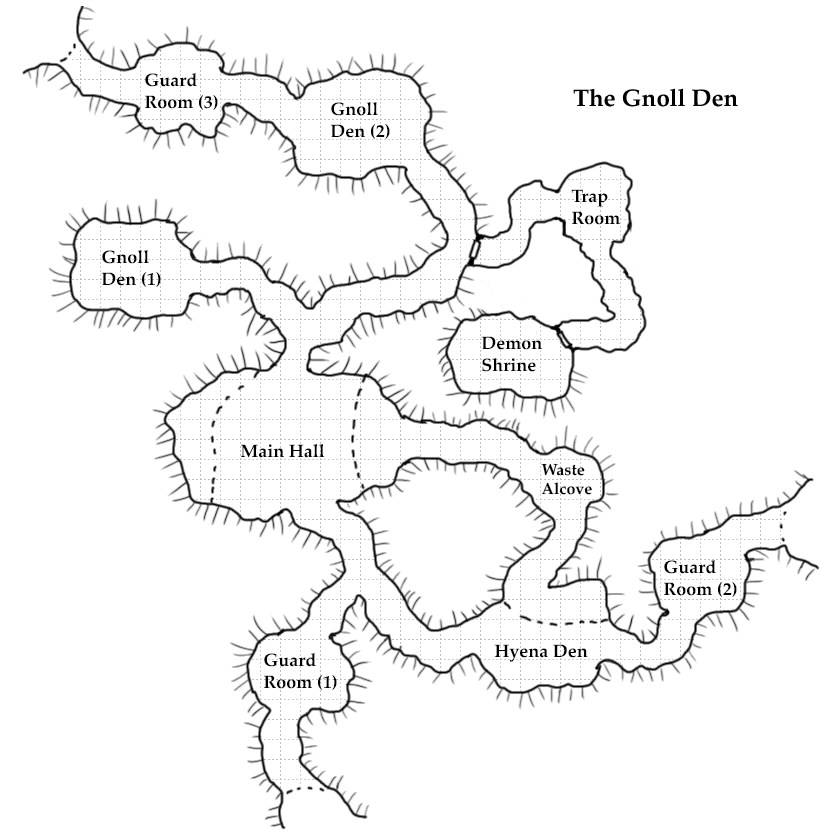

Module 2: Gnoll Attack on Bryder
Premise
There's a den of gnolls in the western Leonian forest, close to the village of Bryder. They have preyed upon civilized passers-by, including an esteemed knight of Arramon and his party.
One morning, when a hunting party from Bryder is out, they realize they are being tracked by two gnolls. They fight and kill one, but the other escapes back to its den. They realize that the den will be after them now, and in order to protect the town, the den of gnolls must be erradicated.
So the leader of the hunters, Dannec, announces the encounter during the village meeting that morning. Will anyone step up to take on this challenge?
Player Characters
PCs for this adventure are all at level 2, and will be a subset of the following:
Human Paladin: a resident of Bryder, the younger child of a noble dedicated to the path of the ancients. Wants to spread goodness because it is beautiful. Sees a duty to protect the land from anything that would spoil it.
Tiefling Warlock: A traveller through Bryder who is on a path, seeking something.
half elf bard: a resident of Bryder who works in town and aspires to greatness through adventure.
wood elf ranger: a forest wanderer who has been taken in by townspeople in Bryder.
halfling rogue: a criminal on the run. Found a place to stay here, but you probably need to leave soon.
and shay is a half elf druid: studied under the druid of Bryer, but now that she's dead you try to take her place.
Setting
The Village of Bryder
The PCs are staying in a small village called Bryder.
Bryder is in the Barony of Antrim, in the County of Blackmere.
Bryder has woods to the south and is supported by the surrounding farmland (mostly to the east and north). Nearby landmarks include:
- main road through the village going east and west
- hunting cabin in the woods
- a peak in the woods with waterfall (water running east) and nice view of the village and surrounding woods
- pond shrine at the edge of the woods where people pray to nature spirits
Bryder's government is a direct democracy. Every week the village has a communal meeting where residents are free to bring up issues. The Alderman will present options on what to do and tally the votes.
Shops
Only items in the PHB worth 10 gp or less are available for purchase in Bryder.
NPCs
The Alderman
Joran (M) Human.
- wants order in the village
The Hunter
Dannec (M) Human.
- skilled hunter
- has a pet Blink Dog (MM 318) that he brings along on the hunt.
- wants to protect his family (wife and daugter)
The Carpenter
Merana (F) Human.
- wants justice
The Blacksmith
Taslom (M) Human.
- wants the easy way
Village Elder
Oraðana (F) Half-elf.
- wants to be remembered
The Gnolls
A pack of gnolls roams the forest preying on deer, rabbits, and farm stock. Now that they've been alerted of a nearby village they want to terrorize it raid it for human slaves for their demon lord. Gnolls worship brutality and fight not only to defend their territory, but also to inflict pain on their enemies.
Creature tables
See Stat Blocks for creature stats.
Roaming Monsters (Table 1)
| roll d6 | monster | MM | |
|---|---|---|---|
| 1-2 | 2d6 Living Brush | 32 | want to drink the party's blood |
| 3-4 | 2d4 Stirges | 284 | want a quick meal of the party's blood and will leave after a bite each |
| 5 | 2d4 Hyenas | 341 | want a meal but will flee quickly |
| 6 | 1 Boar | 319 | want to survive (but the hunter wants to kill) |
Gnoll Den (Table 2)
| CR | name | MM | |
|---|---|---|---|
| 1/2 | Melee Gnoll | 163 | |
| 1/2 | Ranged Gnoll | 163 | |
| 1 | Gnoll Cultist | 163 | leader of the group. Gnoll with spells |
| 1/4 | Hyena | 341 | pets of the gnolls |
Adventure
The Aldermeeting
Small Claims Court
Our adventure begins at this week's Aldermeeting. The first order of business is a small dispute between a carpenter and a blacksmith. The carpenter alleges that she was sold a faulty hand drill, which she shows. The drill bit cannot fit into the hand crank. If someone (maybe a PC, maybe an NPC) spots the flaw (a dent in the crank makes the attachment impossible) the blacksmith admits that his son made it and he did not check the quality before delivering it.
The Alderman takes a survey of what people want the result to be. Someone suggests that the blacksmith pay the carpenter twice what the drill is worth and gives him a new one. The assembled crowd mostly agrees. If a PC speaks up and makes an alternate suggestion, and it's reasonable, they will be in a CHA (Persuasion) contest with the villager. The vote is taken and the winner has their result announced by the Alderman.
The Hunter & Hyena Head
Before the Alderman can advance as planned, a hunter bursts through the crowd into the village center, carrying what looks like a hyena head. The hunter informs everyone that it's the head of a Gnoll -- he encountered it while he was out with his hunting party and they only barely managed to kill it. One of the party is badly injured.
The hunter fears there are more gnolls around, since he knows they live in packs. A farmer speaks up from the crowd and says that she fear for the safety of her livestock. The hunter says she should be more afraid for herself; gnolls are vicious killers.
Call to Heroics
The hunter says they should find the gnoll den and wipe them out -- he will lead a party out to the woods where the hunters encountered it. The Alderman asks who will volunteer for the mission.
If the party seems reluctant to help out, a teen girl (name of Stabler) will volunteer and hopefully spark their sense of duty. If they still don't volunteer, the Hunter will scoff and insult the honor of the residents of Bryder.
The PCs are free to ask the hunter for details and villagers for supplies as they head out. The smith offers his finest sword (a masterwork shortsword) to the PCs. An elder tells them of encounters she had with gnolls long ago, and offers a protective amulet. She mentions that gnolls are noctural. The hunter warns of other dangers in the forest and those who are village residents share their knowledge of the surrounding area (written in their hand-out notes with the character).
The Woods
Nature Shrine
Any village residents would know of the nature shrine at the edge of the woods, and the hunter insists that the group prays there before entering the forest. Anyone who succeeds on a WIS (Religion) check with a DC of 15 and advantage if they're a resident of the village gets the effect of a Guidance spell for 24 hours. (you may decide add 1d4 to any one roll in that period.)
Roaming Monsters
The hunter leads the party through the woods to the place where he killed the gnoll. On the way, PCs encounter some roaming monsters from Table 1. When the encounter is over, the hunter leads them to...
The Gnoll's Body
This is the clearing where the hunter killed the gnoll. Its dead body lays on the ground. It has some arrows (from the hunting party) sticking out of it and some wolfy bite marks. Its own bow is lying close to the body.
The Hunter points out the gnoll's trail into the woods and leaves the party there. He tells them explicity that their goal is to find the gnoll den and eliminate the gnolls. Then he gives them something he was holding back: some healing potions.
If the PCs follow the gnoll's trail they will shortly find the entrance to the gnoll den.
The Dungeon
Gnoll Den
Gnoll dens are a network of tunnels that open into larger communal areas. Tunnels are round and narrow, and some are so narrow that only a young gnoll or hyena can fit through. There are multiple entrances to the den from the outside.
Gnolls raise and keep hyenas in their den. They sleep in different areas. Gnolls and hyenas are nocturnal and have darkvision so the den has no light source.
Long Rests
If the PCs go back to town for a long rest the cultist will attempt to resurrect the other dead gnolls. In order to do this, the gnolls must sacrifice a human to their demon god. So if there is at least 1 other gnoll still alive, they and the cultist will go to a farm and kill some cows and kidnap a child for the ritual. The next day, 1d4+1 gnolls will be revived as Zombie Gnolls.
The PCs will learn about this in town. A farm lady will knock on their door and tell them that her son was kidnapped in the night by gnolls. Now the PCs have to rescue her son as well.

Entrance
The entrance is a hole that's been dug under rock. Broken bones are scattered in the clearing in front of it. The entrance appears to be unguarded.
A patrol (1 gnoll, 1 hyena) makes the rounds of all the entrances and exits of the den every 2 hours.
If the PCs wait at the entrance for 2 hours, they will spot the guard making his rounds. Otherwise the gnoll guard (& hyena friend) will come into the den mid-encounter and surprise them from behind.
Guard Room (1)
A small room for the guard to recharge.
It contains:
- a finely crafted mace
- a broken wooden shield
- 2d6 broken arrows
- a scrap of blue cloth
- a crude pair of wooden dice
- a pile of blood-soaked rags
Hallway
All hallways are curved and have a slight downward slope. The walls are round and have crevices filled with broken bone fragments.
Main hall
Large open room. Stepped on both sides. -__- like that
1 hyena is sleeping up top. 2 gnolls lounge in the room. When they spot PCs, they attack.
It contains:
- remains of wild boar
- sharp sticks
- a rusted shortsword
- a small pile of shiny treasure
- 40 copper pieces
- 120 silver pieces
- a chain shirt
- a pair of gauntlets, with hands still inside
Waste alcove
Alcove for the hyenas to poop.
It contains:
- poop
Hyena den
4-6 hyenas are sleeping (they are nocturnal). They will not attack unless provoked. If provoked, they will make a lot of noise.
Contains:
- skeletons of prey
- a lot of fur
Guard Room (2)
Small room with standing guard stuff.
It contains:
- a pile of rags
- fancy bracers
- empty arrow quiver
- a diamond
Gnoll living (1)
3 sleeping gnolls (who might have been woken up by prior noise).
Contains:
- piles of rags
- crude dice
- 30 copper pieces
- 7 gold pieces
One of the gnolls has a shield and is wearing a signet ring on a strap of leather around his neck. The ring has the coat of arms of the Barony of Arramon, which is obvious to the traveler from Arramon and the Bryder locals.
Trap Room
There's a pile of rocks against a wall and the floor is marked with a subtle magic circle. If anyone steps into the circle, rocks will be disturbed and fall, dealing 2d6 damage to all in their path (half damage on DC 15 dex save).
Demon Shrine
An evil-looking altar.
A religion DC 15 success will discover that it's an altar for sacrifice to the demon lord Yeenoghu. Herbs and stuff are all around, and markings in blood on the walls. Scrolls of dark magic.
If the gnolls have kidnapped the farm kid, he will be manacled in here to the wall. He is unconscious, but alive, wearing his normal clothes. He has long slits on his arms from the resurrection ritual.
Gnoll Living (2)
The boss fight! This room has 2 gnolls, the gnoll cultist, and 2 hyenas. They attack when the PCs enter.
If the gnolls are in danger the hyenas will flee towards the closest entrance.
The room contains:
- ivory bracelet
- elaborate quilt
- 6 bottles of wine from the Barony of Arramon
- a silver flute
- a Belt of Quickness (+1 dex, +10 ft to speed)
- a magic longbow (+1)
- a pile of coins and gems
- 70 copper pieces
- 12 silver pieces
- 38 gold pieces
- 3 rubies
Guard Room(3)
The first one was the room one; if PCs exit through another guard room,
It contains:
- a pile of rags
- sticks
- rabbit fur
- broken comb
- signet ring from Barony of Arramon
Back to Town
On the way back to town, the players have the chance of encountering some more monsters from Table 1. Roll a d6; on a 6, there is an encounter so you should roll on the table for the monsters.
Regardless, they make it back to town in a few hours, where they can tell of their adventure.
If they show the signet ring or banner to knowledgeable people in town, they will know that the coat of arms belongs to the Barony of Arramon. What are nobles from the neighbouring barony doing out here? We leave that mystery for another time.
Stat Blocks
Dannec the Hunter
Medium human, lawful neutral
Armor Class 13
Hit Points 15 (2d10)
Speed 30 ft.
| STR | DEX | CON | INT | WIS | CHA |
|---|---|---|---|---|---|
| 13 (+1) | 14 (+2) | 12 (+1) | 10 (+0) | 10 (+0) | 10 (+0) |
Skills Survival +2, Nature + 2, Perception +2
Senses passive Perception 12
Languages Common
Features
Natural Explorer: Forest. When you make an Intelligence or Wisdom check related to your favored terrain, your proficiency bonus is doubled if you are using a skill that you’re proficient in.
While traveling for an hour or more in your favored terrain, you gain the following benefits:
- Difficult terrain doesn’t slow your group’s travel.
- Your group can’t become lost except by magical means.
- Even when you are engaged in another activity while traveling (such as foraging, navigating, or tracking), you remain alert to danger.
- If you are traveling alone, you can move stealthily at a normal pace.
- When you forage, you find twice as much food as you normally would.
- While tracking other creatures, you also learn their exact number, their sizes, and how long ago they passed through the area.
Actions
Crossbow. Ranged Weapon Attack: +4 to hit, range 80/320 ft, loading, two-handed.
Hit: 1d8 + 2 piercing damage.
Shortsword. Melee Weapon Attack: +4 to hit, reach 5 ft., finesse, light.
Hit: 1d6 + 2 piercing damage.
Equipment
- Leather Armor
- Crossbow
- Quiver with 20 crossbow bolts
- Shortsword
The following text contains content from System Reference Document 5.1 licensed under the Open Game License.
Blink Dog
Medium fey, lawful good
the Hunter's companion
Armor Class 13
Hit Points 22 (4d8 + 4)
Speed 40 ft.
| STR | DEX | CON | INT | WIS | CHA |
|---|---|---|---|---|---|
| 12 (+1) | 17 (+3) | 12 (+1) | 10 (+0) | 13 (+1) | 11 (+0) |
Skills Perception +3, Stealth +5 Senses passive Perception 13 Languages Blink Dog, understands Sylvan but can’t speak it Challenge 1/4 (50 XP)
Features
Keen Hearing and Smell. The dog has advantage on Wisdom (Perception) checks that rely on hearing or smell.
Actions
Bite. Melee Weapon Attack: +3 to hit, reach 5 ft., one target.
Hit: 1d6 + 1 piercing damage.
Teleport (Recharge 4–6). The dog magically teleports, along with any equipment it is wearing or carrying, up to 40 feet to an unoccupied space it can see. Before or after teleporting, the dog can make one bite attack.
Gnoll (Melee)
Medium humanoid (gnoll), chaotic evil
Armor Class 15 (hide armor, shield)
Hit Points 22 (5d8)
Speed 30 ft.
| STR | DEX | CON | INT | WIS | CHA |
|---|---|---|---|---|---|
| 14 (+2) | 12 (+1) | 11 (+0) | 6 (-2) | 10 (+0) | 7 (-2) |
Senses darkvision 60 ft., passive Perception 10
Languages Gnoll
Challenge 1/2 (100 XP)
Features
Rampage. When the gnoll reduces a creature to 0 hit points with a melee attack on its turn, the gnoll can take a bonus action to move up to half its speed and make a bite attack.
Actions
Bite. Melee Weapon Attack: +4 to hit, reach 5 ft., one creature.
Hit: 4 (1d4 + 2) piercing damage.
Spear. Melee or Ranged Weapon Attack: +4 to hit, reach 5 ft. or range 20/60 ft., one target.
Hit: 1d6 + 2 piercing damage, or 1d8 + 2 piercing damage if used with two hands to make a melee attack.
Equipment
- Hide Armor
- Spear
- Shield
Gnoll (Ranged)
Medium humanoid (gnoll), chaotic evil
Armor Class 13 (hide armor)
Hit Points 22 (5d8)
Speed 30 ft.
| STR | DEX | CON | INT | WIS | CHA |
|---|---|---|---|---|---|
| 14 (+2) | 12 (+1) | 11 (+0) | 6 (-2) | 10 (+0) | 7 (-2) |
Senses darkvision 60 ft., passive Perception 10
Languages Gnoll
Challenge 1/2 (100 XP)
Features
Rampage. When the gnoll reduces a creature to 0 hit points with a melee attack on its turn, the gnoll can take a bonus action to move up to half its speed and make a bite attack.
Actions
Bite. Melee Weapon Attack: +4 to hit, reach 5 ft., one creature.
Hit: 1d4 + 2 piercing damage.
Longbow. Ranged Weapon Attack: +3 to hit, range 150/600 ft., one target.
Hit: 1d8 + 1 piercing damage.
Equipment
- Hide Armor
- Longbow
- Quiver with 20 Arrows
Gnoll Cultist
Medium humanoid (gnoll), chaotic evil
Armor Class 13 (hide armor)
Hit Points 22 (5d8)
Speed 30 ft.
| STR | DEX | CON | INT | WIS | CHA |
|---|---|---|---|---|---|
| 12 (+1) | 12 (+1) | 11 (+0) | 12 (+1) | 10 (+0) | 7 (-2) |
Senses darkvision 60 ft., passive Perception 10
Languages Gnoll
Challenge 1 (200 XP)
Features
Spellcasting. The Gnoll Cultist's spellcasting ability is Intelligence. (Spell Save DC 12). It has 2 1st-level spell slots and can cast the following spells:
- Chill Touch (wizard cantrip)
- Ray of Sickness (1st level wizard spell)
- Tasha's Hideous Laughter (1st level wizard spell)
Actions
Bite. Melee Weapon Attack: +4 to hit, reach 5 ft., one creature.
Hit: 1d4 + 1 piercing damage.
Dagger of Death. Melee or Ranged Weapon Attack: +3 to hit, reach 5 ft. or range 20/60 ft., one target.
Hit: 1d4 + 1 piercing + 1d4 necrotic damage.
Staff. Melee Weapon Attack: +3 to hit, reach 5 ft., one target.
Hit: 1d8 + 1 bludgeoning damage.
Chill Touch (Necromancy cantrip). Casting Time: 1 action; Range: 120 feet; Components: V, S; Duration: 1 round
You create a ghostly, skeletal hand in the space of a creature to assail it with the chill of the grave. +3 to hit, range 120 feet.
Hit: the target takes 1d8 necrotic damage, and it can’t regain hit points until the start of your next turn. Until then, the hand clings to the target.
Ray of Sickness (1st level necromancy spell). Casting time: 1 action; Range: 60 feet; Components: V, S; Duration: Instantaneous
A ray of sickening green energy lashes out towards a creature. +3 to hit, range 60 feet.
Hit: 2d8 poison damage, and target must make a Constitution saving throw (DC 12). On a failed save it is poisoned until the end of its next turn. (A poisoned creature has disadvantage on all attack rolls and ability checks.)
Hideous Laughter (1st level enchantment spell). Casting time: 1 action; Range: 30 feet; Components: V, S, M (a feather waved in the air); duration: concentration, up to 1 minute
A creature that you can see falls into fits of laughter if this spell affects it. Target must succeed on a Wisdom saving throw (DC 12) or fall prone, becoming incapacitated and unable to stand up.
At the end of its turn and each time it takes damage the target can make another Wisdom saving throw. The creature has advantage if the saving throw was triggered by damage.
Equipment
- Wooden staff with a symbol of Yeenoghu (the cultist's casting focus) tied on
- Hide armor
- a magic dagger (+1 to hit, +1d4 necrotic damage)
Gnoll Zombie
Medium undead (gnoll), neutral evil
Armor Class 8
Hit Points 22 (3d8 + 9)
Speed 20 ft.
| STR | DEX | CON | INT | WIS | CHA |
|---|---|---|---|---|---|
| 13 (+1) | 6 (-2) | 16 (+3) | 3 (-4) | 6 (-2) | 5 (-3) |
Saving Throws Wis +0
Damage Immunities poison
Condition Immunities poisoned
Senses darkvision 60 ft., passive Perception 8
Languages understands Gnoll but can’t speak
Challenge 1/4 (50 XP)
Features
Undead Fortitude. If damage reduces the zombie to 0 hit points, it must make a Constitution saving throw with a DC of 5 + the damage taken, unless the damage is radiant or from a critical hit. On a success, the zombie drops to 1 hit point instead.
Actions
Slam. Melee Weapon Attack: +3 to hit, reach 5 ft., one target.
Hit: 4 (1d6 + 1) bludgeoning damage.
Equipment
- ragged clothes
Hyena
Medium beast, unaligned
Armor Class 11
Hit Points 5 (1d8 + 1)
Speed 50 ft.
| STR | DEX | CON | INT | WIS | CHA |
|---|---|---|---|---|---|
| 11 (+0) | 13 (+1) | 12 (+1) | 2 (-4) | 12 (+1) | 5 (-3) |
Skills Perception +3
Senses passive Perception 13
Languages —
Challenge 0 (10 XP)
Features
Pack Tactics. The hyena has advantage on an attack roll against a creature if at least one of the hyena’s allies is within 5 feet of the creature and the ally isn’t incapacitated.
Actions
Bite. Melee Weapon Attack: +2 to hit, reach 5 ft., one target. Hit: 3 (1d6) piercing damage.
Living Brush
Small plant, neutral evil
Armor Class 13 (Natural armor)
Hit Points 4 (1d6 + 1)
Speed 20 ft.
| STR | DEX | CON | INT | WIS | CHA |
|---|---|---|---|---|---|
| 6 (-2) | 13 (+1) | 12 (+1) | 4 (-3) | 8 (-1) | 3 (-4) |
Skills Stealth +3
Damage vulnerabilities fire
Condition Immunities blinded, deafened
Senses blindsight 60ft. (blind beyond this radius), passive Perception 9
Languages understands common but can't speak
Challenge 1/8 (25 XP)
Features
False Appearance. While remaining motionless, the Brush is indistinguishable from a dead shrub.
Actions
Claws. Melee Weapon Attack: +3 to hit, reach 5 ft., one target. Hit: 1d4 + 1 piercing damage.
Stirge
Tiny beast, unaligned
Armor Class 14 (natural armor)
Hit Points 2 (1d4)
Speed 10 ft., fly 40 ft.
| STR | DEX | CON | INT | WIS | CHA |
|---|---|---|---|---|---|
| 4 (-3) | 16 (+3) | 11 (+0) | 2 (-4) | 8 (-1) | 6 (-2) |
Senses darkvision 60 ft., passive Perception 9
Languages —
Challenge 1/8 (25 XP)
Actions
Blood Drain. Melee Weapon Attack: +5 to hit, reach 5 ft., one creature. Hit: 1d4 + 3 piercing damage, and the stirge attaches to the target. While attached, the stirge doesn’t attack. Instead, at the start of each of the stirge’s turns, the target loses 1d4 + 3 hit points due to blood loss.
The stirge can detach itself by spending 5 feet of its movement. It does so after it drains 10 hit points of blood from the target or the target dies. A creature, including the target, can use its action to detach the stirge.
Boar
Medium beast, unaligned
Armor Class 11 (natural armor)
Hit Points 11 (2d8 + 2)
Speed 40 ft.
| STR | DEX | CON | INT | WIS | CHA |
|---|---|---|---|---|---|
| 13 (+1) | 11 (+0) | 12 (+1) | 2 (-4) | 9 (-1) | 5 (-3) |
Senses passive Perception 9
Languages —
Challenge 1/4 (50 XP)
Charge. If the boar moves at least 20 feet straight toward a target and then hits it with a tusk attack on the same turn, the target takes an extra 3 (1d6) slashing damage. If the target is a creature, it must succeed on a DC 11 Strength saving throw or be knocked prone.
Relentless (Recharges after a Short or Long Rest). If the boar takes 7 damage or less that would reduce it to 0 hit points, it is reduced to 1 hit point instead.
Actions
Tusk. Melee Weapon Attack: +3 to hit, reach 5 ft., one target. Hit: 1d6 + 1 slashing damage.
Treasure
The Aldermeeting
masterwork shortsword
protective amulet
The Woods
Gnoll Bow
Healing Potion
Dungeon
Fine Mace
A finely crafted mace. It is elegantly shaped and is inlaid silver and brass details.
Simple Melee Weapon
Damage: 1d6 bludgeoning
Weight: 4 lb.
Properties: —
Details
When the Baron of Arramon grants land to someone and turns them into a knight, he also gives them an ornate mace like this one. It is a symbol of the knight's bond to the baron.
If you try to sell the mace, the shopkeep will identify the mace immediately and refuse to buy it.
Scrap of blue cloth
A scrap of an emblazoned blue banner. Three white crescent moons on a blue background.
Details
This is a banner with the coat of arms of the Barony of Arramon. It would be flown by anyone representing the barony.
- Someone from Arramon or from southern Leonia would know this.
- Someone from elsewhere in Leonia would know on a INT check of 15.
rusted shortsword
A rusted shortsword.
Simple Melee Weapon
Damage: 1d6-1 piercing
Weight: 2 lb.
Properties: Finesse, light
This sword is worthless to any potential buyer.
chain shirt
A well-crafted chain shirt.
Medium Armour
AC 13 + Dex mod (max 2)
Weight 20 lbs.
Sells for 15 gp in Bryder. The shopkeep mentions the great quality of the workmanship. (But no bonuses beyond regular chain shirts.)
Pair of Gauntlets
A pair of nice gauntlets with hands inside.
If you remove the hands and clean them up, they can be sold for 5 sp. They cannot be sold with the hands still inside.
Fancy Bracers
A nice pair of leather bracers.
Can be sold for 1 sp.
ivory bracelet
Worth 10 gp. People in Bryder can only offer 5 gp.
- elaborate quilt
- 6 bottles of wine from the Barony of Arramon
- a silver flute
Belt of Quickness
A thin leather belt. Putting it on, the wearer will immediately feel a lightness in their step.
+1 dex, +10 ft to speed
signet ring
The ring bears the symbol of an unknown knight.
Details
The knight that bears this symbol is a knight of Arramon.